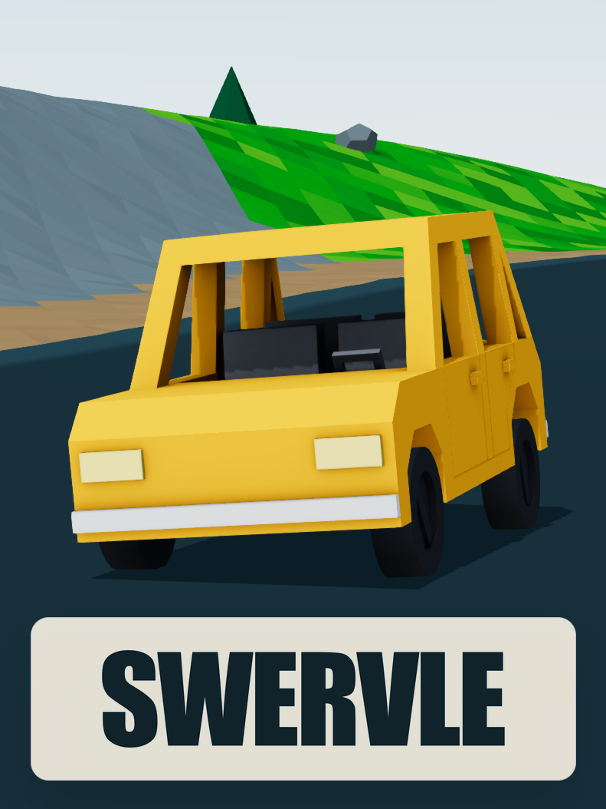

How to play

Grip changes with the surface. Ice is slippery. Dirt is loose.
Keyboard
| Input | Action |
|---|---|
| W A S D or arrows | Drive |
| Space | Handbrake |
| R | Back to the last checkpoint. The clock keeps running. |
| F or Backspace | Restart |
| C | Camera |
| G | Ghosts on or off |
| Esc | Menu and leaderboard |
Touch
On a phone the controls are on the screen.
Boosts
- Ramps give a boost. You leave a ramp faster than you hit it.
- Reverse gives a boost. Above 30 the car keeps speeding up backwards.
Ghosts
Click a racer on the leaderboard to race their ghost. Ghosts do not collide with you. Press G to hide them.
Performance issues
Turn on graphics acceleration in your browser. In Chrome and Edge it is under Settings, System: Use graphics acceleration when available. In Firefox it is under Settings, General, Performance. Restart the browser after.
Still choppy? Press Esc, open Settings, and lower Graphics. The physics are the same at every setting.
Times on the board are checked on the server.